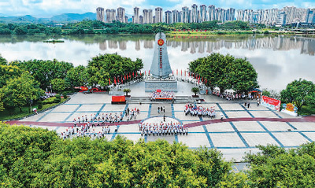
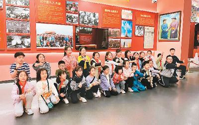
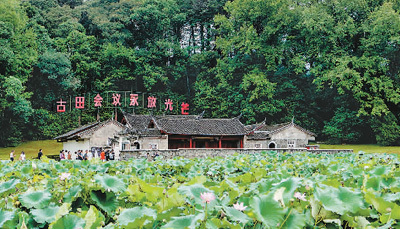

探访革命旧址、纪念馆、博物馆，观看红色演艺，购买红色文创产品，红色旅游不仅是暑期文旅市场中的一大亮点，也成为各地讲好红色文化故事的重要途径。
“校外课堂”很生动
近日，各地大中小学陆续开学，红色文化成为许多学校“开学第一课”的重要内容。日前，黑龙江省哈尔滨市延寿县文体广电和旅游局联合县教育局举办“铭记光辉历史、传承红色基因、革命薪火代代相传”红色教育进校园活动，延寿县第二中学全校师生在讲解员的带领下，一同参观革命文物主题巡展，了解东北抗联历史、延寿革命历史以及延寿县的红色遗址遗迹，并聆听延寿县文物保护中心宣讲员讲述相关红色故事。延寿县文体广电和旅游局相关负责人表示，希望通过主题巡展和专题演讲的形式，推动红色文化“动”起来、“融”起来。
在湖南韶山，“我的韶山行”中小学生红色研学活动已开展一年多，先后有近24万名学生参与。在毛泽东同志故居、中共韶山特别支部历史陈列馆等地，常能看到参观展览、聆听讲解的学生。湖南省教育厅相关负责人表示，“我的韶山行”不仅是一次研学之旅，更是一堂行走的思政课，希望通过这样的形式把“红色种子”播撒进广大青少年心中，并将学思用、知信行贯穿研学全过程。为了让这一“校外课堂”更生动可感，当地注重挖掘文物、文献、事迹、故事等红色资源，打造多维度的实景课程，力求实现历史与现实深度结合，既能引起学生的兴趣，又能引发他们的思考。
靠创新“圈粉”游客
为深入实施“党的诞生地”红色文化传承弘扬工程，赓续红色血脉、传承红色基因，打响上海红色文化品牌，在上海市委宣传部指导下，“红色电影之旅”活动已成功开展多季，取得良好效果。据了解，上海市电影发行放映行业协会携手上海市旅游行业协会拟推出全新一季“红色电影之旅”活动，以“参观红色景点+观看红色影片+聆听红色知识”为主要形式，从实景到影像，为参与者提供一个多元化的红色文化学习平台。主办方从上海全市范围内精心挑选21处红色景点，包括中共一大纪念馆、中共二大会址纪念馆、中共四大纪念馆、龙华烈士陵园等，辅以35部红色主旋律影片，包括舞剧电影《永不消逝的电波》、电影《1921》《先驱者》等，整理出受广大群众喜欢的12条精品线路，如观看电影《1921》、游中共一大会址等。上海主要5A级旅行社也将发挥自身优势，打造相关旅游线路产品，并在全国范围内推广。
陕西是重要的红色旅游目的地，现有不可移动革命文物1141处，各类革命纪念馆76座，依托革命文物的全国爱国主义教育示范基地13处，国家级抗战纪念设施、遗址10处。经过多年发展，陕西红色旅游产品体系日益完善，红色演艺“圈粉”众多游客。
在金延安旅游度假区，游客白天可观看大型红色历史舞台剧《延安保育院》，晚上还能沉浸式体验大型红色歌舞剧《延安十三年》。《延安十三年》演出时，观众与演员一同行进，融入“穿越感”十足的剧情，既是剧中人，又是观剧者。自今年5月19日复演以来，该演出已接待游客2万多人次。红色主题秀《延安延安》暑期“一票难求”，演出中包含秧歌表演、民歌互动、赠送红枣等环节，能让观众更好地领略陕北风情。
联动发展有活力
今年8月3日起，“南湖·1921”红色旅游列车升级开行，运行区间由原来的铁路上海西站至嘉兴站，延长开行至杭州站，沿途停靠站除了原来的嘉善、嘉兴两站外，新增海宁站。列车每日往返开行一趟，旅客可在一天内往返沿线城市。升级开行1个月，该列车接待旅客逾4.7万人次，同比增长超237%，环比增长超222%。
该列车是全国唯一一趟“重走一大路”特色旅游列车，列车车厢内设有“火车邮局”、“党史学习角”、老照片展示等区域。自2021年6月开行以来，许多人专程前来乘坐该列车“重走一大路”。截至目前，该列车共接待团队400余个、旅客27万余名。
上铁文旅传媒集团公司相关负责人介绍，经考证发现，当年一大代表们乘坐的列车起点是上海，但终点不是嘉兴，而是过了嘉兴后，往杭州方向去了。此次列车运行区间延伸，既更好地还原了历史，又为这趟列车增加了更多交通运输的功能，也成为推广沿线城市红色旅游资源的窗口。该公司和上海不少红色旅游点开展常态化合作，也会组织乘此趟列车来沪旅游的游客，前往一大会址等红色地标参观；与浙江嘉兴南湖景区合作，乘客凭车票购买景区文创产品可享受折扣等。未来，上铁文旅传媒集团公司还将积极与杭州、海宁的红色旅游资源点开展合作。
近日，百名上海游客登上“六盘山号”包机，开启上海至宁夏回族自治区固原市红色首航之旅，在六盘山红军长征旅游区开展“长征之旅”，体验“重温一次入党誓词、吟诵一首长征诗歌、重走一次长征小道、聆听一堂情景党课、参观红色长征纪念馆”等红色旅游项目。上海与宁夏回族自治区还共同打造了10条以“从初心之地出发 走好新时代长征路”为主题的红色旅游精品线路，包括感悟长征精神、感受伟大胜利的“回望六盘之旅”，瞻仰伟人故里、唤起红色记忆的“初心回归之旅”，涵盖改革开放主题、展示新时代发展成就的“鼓舞奋进之旅”，领略黄河文明、走进丝路大漠、探寻西夏古韵的“文化传承之旅”等。两地联动不仅可促进客源互送，也为双方红色旅游发展注入了活力。


